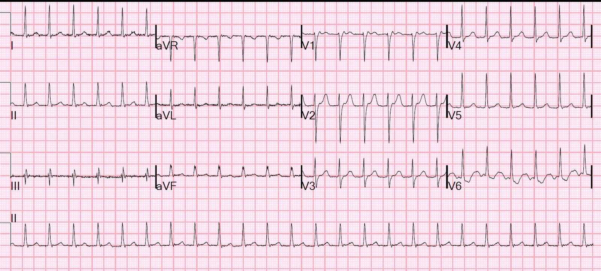
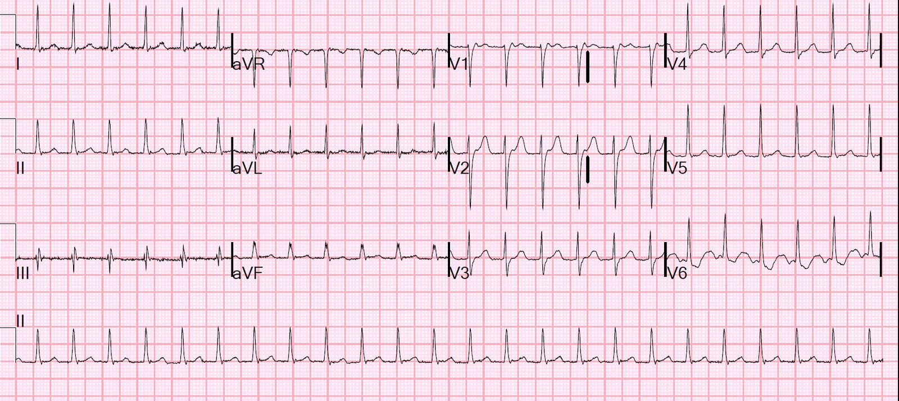
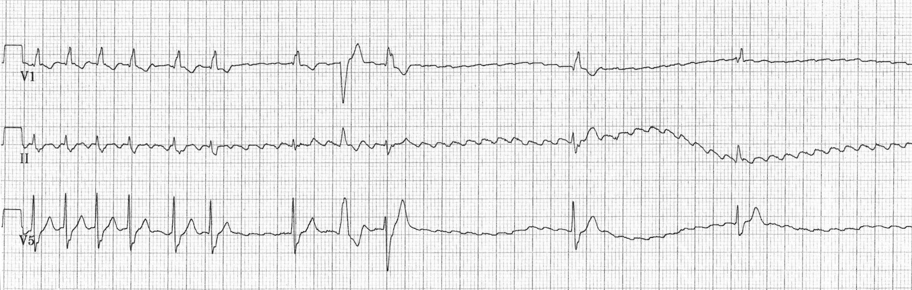
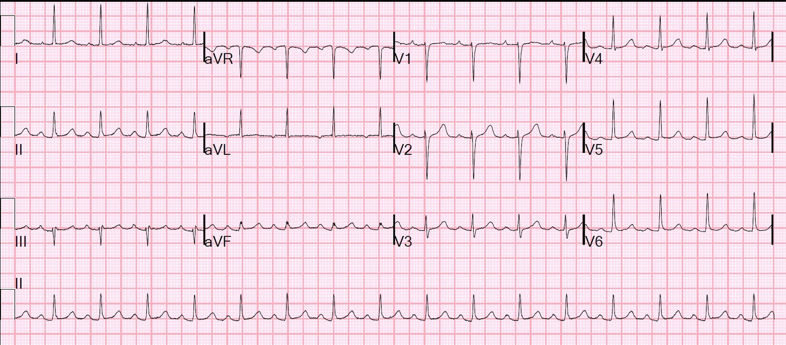

31/10/2016 — Một cơn SVT bề ngoài mà adenosine không chuyển nhịp được bền vững
Bản dịch tiếng Việt của bài "An apparent SVT that does not persistently correct with adenosine" – Dr. Smith’s ECG Blog. Giữ nguyên toàn bộ 4 hình ảnh của bản gốc.
Một phụ nữ trung niên đến khám vì đau bụng. Bà được phát hiện có tần số tim 150. Một điện tâm đồ 12 chuyển đạo được ghi:


Đó là gì?
Nhịp nhanh QRS hẹp đều (regular narrow complex tachycardia) có thể là nhịp nhanh xoang, nhịp nhanh nhĩ, cuồng nhĩ, nhịp nhanh vào lại nút nhĩ thất (AVNRT), nhịp nhanh vào lại nhĩ thất xuôi chiều [dùng một đường phụ (bypass tract, accessory pathway), tức là WPW], hoặc nhịp nhanh bộ nối.
MAT và rung nhĩ, những nguyên nhân khác của nhịp nhanh trên thất, không thể có ở đây vì chúng luôn không đều, còn nhịp này thì đều.
Không có sóng P rõ ràng nào trước QRS và có các sóng P ngược dòng rõ ràng (xem V2 bên dưới).


Một khi đã tìm thấy chúng, bạn đi lên V1 và có thể thấy sóng P ngược dòng hoàn toàn âm.
–Như vậy, đây không thể là nhịp nhanh xoang hay nhịp nhanh nhĩ, vốn sẽ có sóng P dương ở V2.
Giả sử sóng P dương ở V2 và ở cùng vị trí giữa QRS thì sao? Khi đó bạn sẽ phải cân nhắc đây là nhịp nhanh xoang hoặc nhịp nhanh nhĩ với khoảng PR rất dài.
–Khi có nhịp nhanh QRS hẹp, đặc biệt ở tần số 150, bạn cũng nên tìm sóng cuồng nhĩ, ở đây không có.
–Nhịp nhanh bộ nối là có thể, vì nó cũng có thể có sóng P ngược dòng. Nhịp này ít gặp hơn nhiều, nên ta hãy loại bỏ nó.
–Như vậy, còn lại các nhịp nhanh vào lại sử dụng nút AV (AVNRT và AVRT xuôi chiều).
Nhịp này có thể được điều trị bằng nghiệm pháp cường phế vị, tốt nhất trong số đó là nghiệm pháp Valsalva cải biên, có tỷ lệ thành công khoảng 40%. Đáng tin cậy hơn là adenosine.
Ca bệnh tiếp diễn
Siêu âm tim tại giường cho thấy chức năng thất trái tốt.
Bệnh nhân được cho adenosine 6 mg nhưng không có tác dụng. Sau đó bà được cho adenosine 12 mg và có một khoảng ngưng vô tâm thu (không lộ ra sóng cuồng nhĩ nền), tiếp theo là một nhát xoang, rồi một nhát QRS hẹp đến sớm, sau đó lại là SVT.
Bình luận
Ngoài lề: nếu đây là cuồng nhĩ, bạn sẽ thấy các sóng cuồng nhĩ nền lộ ra khi adenosine blốc nút AV và do đó loại bỏ QRS vốn che khuất sóng cuồng nhĩ. Hãy xem hình này, lấy từ một bài viết tuyệt vời (nhịp thứ ba trong 12 nhịp của mùa Giáng sinh) của Vince DiGiulio trên EMS 12-lead, và Vince đã vui lòng cho phép tôi sử dụng:


Vậy điều gì đã xảy ra? Adenosine có hiệu quả không?
Có! Nhiệm vụ duy nhất của adenosine là cắt đứt vòng vào lại qua nút AV. Tác dụng của nó cực kỳ ngắn, nên nó sẽ hết ngay lập tức và không thể chấm dứt một cơn SVT kịch phát khởi phát sau đó. Vì vậy có thể phải ngăn chặn sự khởi phát của PSVT.
PSVT khởi phát như thế nào? PSVT cần 2 đường dẫn truyền. Trong AVRT, một trong hai đường là đường phụ. Trong AVNRT, có 2 đường trong nút AV: một đường nhanh với thời kỳ trơ dài và một đường chậm với thời kỳ trơ ngắn. PSVT khởi phát bằng một nhát bóp nhĩ sớm (PAB) đến nút AV khi đường nhanh vẫn còn trơ, còn đường chậm thì không. Rồi xung đi xuống theo đường chậm tới phần dưới của nút, tại đó nó thấy đường nhanh đã hết trơ và đi ngược lên nhánh nhanh đó. Khi tới phía trên, nó đi tới CẢ tâm nhĩ lẫn quay xuống lại theo đường chậm. Rồi cứ thế xoay vòng mãi. Để có giải thích chi tiết hơn kèm hình ảnh, hãy xem bài giảng này từ phút 3:18 đến 4:54.
PSVT được cắt cơn bằng cách cắt đứt vòng vào lại. Nếu nó tái phát, có thể ngăn tái phát thêm bằng 1) duy trì ức chế AV liên tục, như với một thuốc tác dụng kéo dài hơn, chẳng hạn thuốc chẹn kênh calci, hoặc 2) ngăn ngừa PAB. PAB có thể được ngăn ngừa bằng thuốc chẹn beta hoặc amiodarone.
Thuốc chẹn beta có thể có hại ở bệnh nhân có chức năng thất trái kém vì tác dụng giảm co bóp cơ tim của chúng. Trong những trường hợp như vậy, tôi đã thử esmolol, vì nó có thời gian bán thải ngắn và có thể ngừng được. Tôi đã không thành công. Xem ca này:
Paroxysmal SVT (PSVT) that repeatedly recurs in spite of successful conversion with adenosine. (SVT kịch phát (PSVT) tái phát lặp đi lặp lại dù đã chuyển nhịp thành công bằng adenosine.)
Trong ca đó, khi esmolol không hiệu quả, tôi đã cho amiodarone bolus 150 mg, tiếp theo là truyền liên tục, và sau can thiệp đó bệnh nhân duy trì nhịp xoang.
Trong ca hôm nay, adenosine đã có hiệu quả, nhưng chỉ trong vòng một nhát, đã có một PAB khác khởi phát lại PSVT.
Phải làm gì? Amiodarone? Thuốc chẹn kênh calci? Một thứ khác? Vì bệnh nhân này có chức năng thất trái tốt, thuốc chẹn kênh calci là một lựa chọn tuyệt vời và an toàn. Trước khi có adenosine, verapamil là cách chuẩn để cắt cơn PSVT.
Liều verapamil tĩnh mạch: liều tĩnh mạch khuyến cáo của verapamil là 5 mg trong 2 phút, sau 5 đến 10 phút (nếu không thành công) tiếp theo là liều thứ hai 5 đến 7.5 mg.
Liều diltiazem tĩnh mạch: Liều tĩnh mạch khuyến cáo của diltiazem là 20 mg, tiếp theo, nếu cần, là liều thứ hai 25 đến 35 mg.
Có thể cho một liều uống để duy trì lâu dài.
Ca bệnh tiếp diễn:
Trong ca này, 2 g Mg (8 mmol, 16 mEq) đã được cho bởi một trong những đồng nghiệp xuất sắc của tôi, Laura Shrag, và bệnh nhân đã chuyển nhịp!
Đây là điện tâm đồ sau chuyển nhịp:


Bản ghi này được đọc là nhịp xoang, nhưng trông giống nhịp nhĩ lạc chỗ hơn. Sóng P ở V1 dương, trong khi nó lẽ ra phải hai pha. Điều này có nghĩa là chuyển đạo V1 nằm bên trái nguồn phát sóng P. Hoặc tim nằm lệch hẳn sang phải, hoặc V1 được đặt quá lệch sang trái, hoặc có một nguồn phát nhĩ ở bên trái. Dù sao đi nữa, đây là một nhịp ổn định với tần số tốt và chúng ta không cần lo lắng gì thêm về nó.
–Không có sóng delta, nên ít có khả năng đây là WPW, dù không có sóng delta không loại trừ được WPW.
Xem giải thích về điều này ở hai bài sau:
—A large R-wave in lead V1. And why is the PR interval not short? (Sóng R lớn ở chuyển đạo nêu trên. Và tại sao khoảng PR không ngắn?)
—Wide Complex Tachycardia (Nhịp nhanh QRS rộng)
Một điều cũng đáng lo ngại: bệnh nhân này có nhịp nhanh mà hoàn toàn không hay biết. Bà đến khám chỉ vì đau bụng. Điều này hàm ý bà không nhận biết được cơn PSVT của mình và có thể sống chung với nó trong những khoảng thời gian dài. Nhịp nhanh kéo dài có thể dẫn đến bệnh cơ tim, vì vậy điều đặc biệt quan trọng là bà phải dùng thuốc lâu dài, hoặc được triệt đốt, để nhịp nhanh này không tái phát.
Magnesi trong PSVT:
Có thể tạm coi magnesi như một thuốc chẹn kênh calci không đặc hiệu. Tôi đã không biết đến tác dụng của nó trên PSVT cho đến ca này. Có dữ liệu cho thấy magnesi, với liều khoảng 0.15-0.30 mEq/kg (10.5- 21 mEq cho mỗi 70 kg, hay 1.3-2.6 gam cho mỗi 70 kg), thường hiệu quả trong việc cắt cơn PSVT với tỷ lệ tác dụng phụ nhẹ thấp (cảm giác nóng thoáng qua, đỏ bừng mặt và vã mồ hôi).
10 mmol = 2.5 g = 20 mEq
Trong y văn điện sinh lý (EP) dưới đây, nó có tác dụng không nhất quán trong việc cắt cơn, nhưng luôn kéo dài dẫn truyền xuôi dòng qua nút AV, vốn là một thành phần cần thiết để cắt cơn.
1. Trong một nghiên cứu thăm dò điện sinh lý, sau một liều bolus 0.3 mEq/kg, tiếp theo là truyền duy trì 0.2 mEq (0.025 gm)/kg/giờ, Mg được chứng minh làm tăng độ dài chu kỳ nhịp nhanh khoảng 10% nhờ làm chậm dẫn truyền xuôi dòng trong nút AV của vòng vào lại. Tuy nhiên, nó dường như không chuyển nhịp được ca nào trong 4 ca AVNRT được nghiên cứu hay ca AVRT nào. Nó không ngăn được khả năng gây khởi phát SVT hay ảnh hưởng đến thời kỳ trơ: http://www.sciencedirect.com/science/article/pii/S0002870305800213
2. Trong nghiên cứu thăm dò điện sinh lý này, 8 trong 10 cơn SVT có liên quan đến nút AV (4 AVRT và 6 AVNRT) đã được cắt cơn bằng 2 gam MgSO4 bolus nhanh, đẩy theo bằng nước muối sinh lý. http://www.sciencedirect.com/science/article/pii/0002914989900921
3. Trong nghiên cứu thăm dò điện sinh lý tìm liều này, sự kéo dài khoảng nhĩ-His không rõ rệt hơn ở các liều cao hơn 5 mmol (=1.25 g) so với ở liều 5 mmol: http://europace.oxfordjournals.org/content/2/4/320.short
4. Trong nghiên cứu thăm dò điện sinh lý này, Mg hiệu quả trong việc cắt cơn ở 5 trong 15 ca có sinh lý nút AV kép và 0 trong 8 ca không có đường dẫn truyền kép trong nút AV:
http://www.sciencedirect.com/science/article/pii/S0002914907013343 (nghiên cứu về magnesi trong cắt cơn nhịp nhanh trên thất)
Xem bài này để có giải thích về đường dẫn truyền kép trong nút AV:
Wide Complex Tachycardia in a 20 something. (Nhịp nhanh QRS rộng ở một người hai mươi mấy tuổi.)
5. Đây là một báo cáo ca bệnh về cắt cơn SVT tại khoa cấp cứu (ED), từ tạp chí Annals of EM những năm 1990: http://www.sciencedirect.com/science/article/pii/S0196064496702755
Kết cục
Bệnh nhân được bắt đầu dùng Diltiazem CD 120 mg mỗi ngày.
Những điểm cần học:
1. SVT được adenosine chuyển về nhịp xoang có thể quay trở lại SVT.
2. SVT được khởi phát bởi các PAB. Ngăn ngừa PAB giúp ngăn tái phát.
3. Thuốc chẹn kênh calci rất hiệu quả trong việc chuyển về và duy trì nhịp xoang.
4. Đặc biệt ở những bệnh nhân không dung nạp được thuốc chẹn kênh calci, hợp lý khi thử tiêm tĩnh mạch bolus Mg 1.25 đến 2.5 g.
5. Ở những bệnh nhân không đáp ứng với Mg và không dung nạp được thuốc chẹn kênh calci, amiodarone 150 mg rồi truyền liên tục có thể hiệu quả trong việc ngăn ngừa các cơn PSVT tiếp theo. Có thể phải chuyển nhịp bệnh nhân về nhịp xoang bằng adenosine thêm nữa.